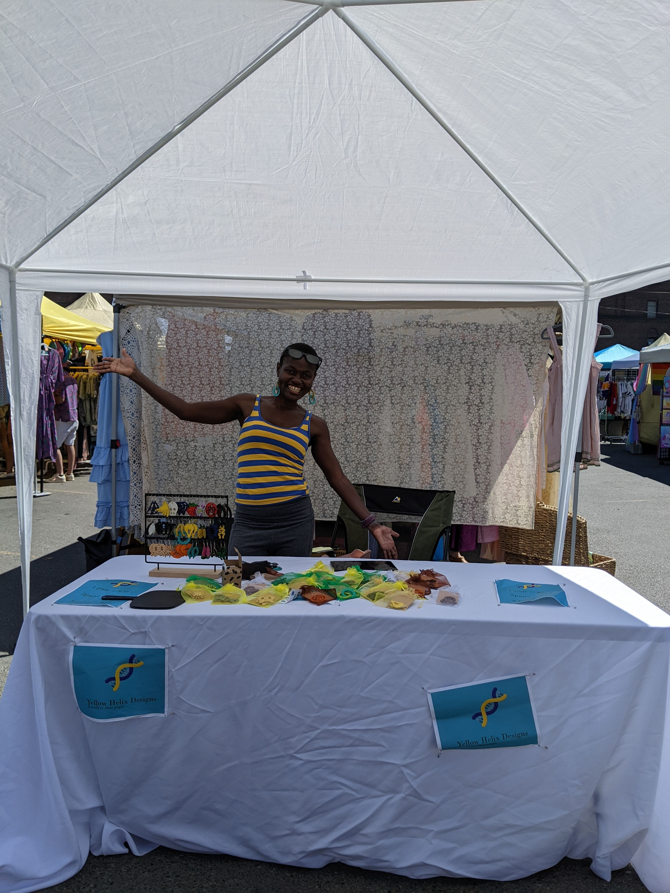

Meet Imaculate the business-woman.

You are probably wondering, how did we get here? Did I quit my tech job? What happened to the running-inspired articles? Thanks for asking; No I’m still a Software Engineer who runs a lot. I just added another line to my resume. If you stick around, you’ll find out that this venture was very much inspired by running. You are probably why? The answer lies somewhere in curiosity, fun and obsession.
I have been making earrings for a while and people always complement me when I wear them.

Naturally, I was curious as to how much these complements were worth: enough to start to a business? replace my full time job? This had remained a curiosity due to bandwidth and visa constraints. That changed this summer when I scaled down on running. Don’t get me wrong I’m still running the same volume, I just stopped doing running adjacent activities i.e Racing, Strava, Instagram, Keeping up with the latest running news, Centering my life around running.. We don’t talk enough about how much headspace that takes but that’s a topic for another post. That said, I was ready for another obsession, (yes you read that correctly I’m all about completely throwing myself into one obsession at a time :)).
Yellow Helix Designs was conceived almost immediately after my birthday race. After a month of paper-work, applying to markets and making way too many earrings, I was out in the streets. I had no idea what to expect but I figured worst case scenario I’d loose a few hundred bucks, a small price to pay for essentially a self-taught MBA. Months later, I can confirm that business is hard but its totally worth it, if not for profit then at least for the experience. I learnt a lot this summer, lessons that carry over to my career and life. True to my style, I’m here to share it all; buckle up!
- Ownership.
I think the world would be a better place if more of us were owners. Ownership brings out the best in us. When you own something, priorities are clear and you do everything in your power to make it succeed: No drama, no politics, just absolute commitment to get things done. Enterprenuership is one of the few arenas where you can really claim space in the world and I’m glad I gave it a try. Sure, it comes with lots of responsibility and commitment but so does anything worth doing.
- Follow up.
They don’t teach this in school but following up is a very under-rated skill. Since I started applying late, most market slots were already taken. But I got into waitlists, so they was still hope. I just kept emailing market cordinators till someone said yes. They were probably others on the waitlist but they probably didn’t want it as much as I did. If you really want something follow up and follow through, that alone is a major advantage because most people wont.
- Work with fear.
Believe it or not, fear is actually a good thing. A healthy dose stops us from doing dumb things like fall of a cliff or drain our bank accounts. I had lots of fears starting out: what if I don’t get into markets? what if no-one buys my jewellery? what if no-one actually like my earrings? Where there are unknowns, its easy to assume the worst. With calculated risks, worst case scenarios are rarely that bad. When I did the math, the worst case scenario was I’d loose a few hunded bucks, feel embarassed for not selling and end up with a bunch of earrings (not really a bad outcome as I could always gift/donate them). That clarity gave me confidence to keep showing up rain or shine.
- Skin in the game.
There is no shortage of reasons for not pursuing our goals. I for one have a full list as to why I don’t play the piano: lack of motivation, time constraints, I’m not that good, earthquakes (for some reason) but deep-down I know they are really just excuses. The reality is if I don’t do it, no-one will ask about it; So given the choice I resort to a less demanding activities like Youtube rabbit holes. What differentiates dreamers from doers is accountability. Running a business kept me accountable to myself, my customers, and everyone involved in bringing markets to life. There is no magic, skin in the game is what made me a doer.
- Forget discipline, find passion.
In addition to intrinsic benefits, pursuing a passion, I like the side effects that result from simply being engaged. I can count by hand the hours I spent mindlessly scrolling social media this summer, less than 10 for sure. In its place I have consumed lots of content about enterprenuership; books, youtube, pocasts, you name it. The desire to learn made everything less appetizing. When it comes to social media consumption, most of us don’t have a discipline problem, we have an engagement problem. Willingly or not, our attention has to go somewhere, its more fulfilling when it goes to fueling a passion.
- Money pyschology is weird.
Considering that the premise of a business is to get people to give you money, I learnt a thing or two about money pyschology. In an effort to increase sales I tried a bunch of strategies and was very suprised with the ones that worked. It wasn’t reducing prices, quite the opposite actually. Instead of uniform pricing, I introduced a higher tier products and that, somehow made the middle tier products look like a good deal. The higher tier sales didn’t drop at all. My theory is, audience really likes fun jewellery so they don’t mind paying little extra or that people feel better about expensive purchases. Hard to tell with a small sample size but it was interesting to observe these experiments play out in real time.
- Its all about people.
Like all good things in life, business is about people. I can’t put a price on the connections I made while sitting in my tent. I have thoroughly enjoyed listening to customers’ stories: Why they enjoy wearing earrings, the people they are gifting to, the people I remind them of. Connecting with vendor-neighbors has been rewarding in more ways than one: from sharing business tips to much need moral support. I have been exposed to a whole new world of good people and that’s how I know that the world is not totally broken.
I can’t capture eveything I learnt this summer but this is a good summary. I didn’t build a jewelry empire but I validated my hypothesis: I can infact run a profitable self-funded business part time. I have many more ideas to make it even profitable but they can wait. As for now, its time to recharge, reflect and regroup.
Thanks for sticking around! Feel free to follow my business Instagram here.